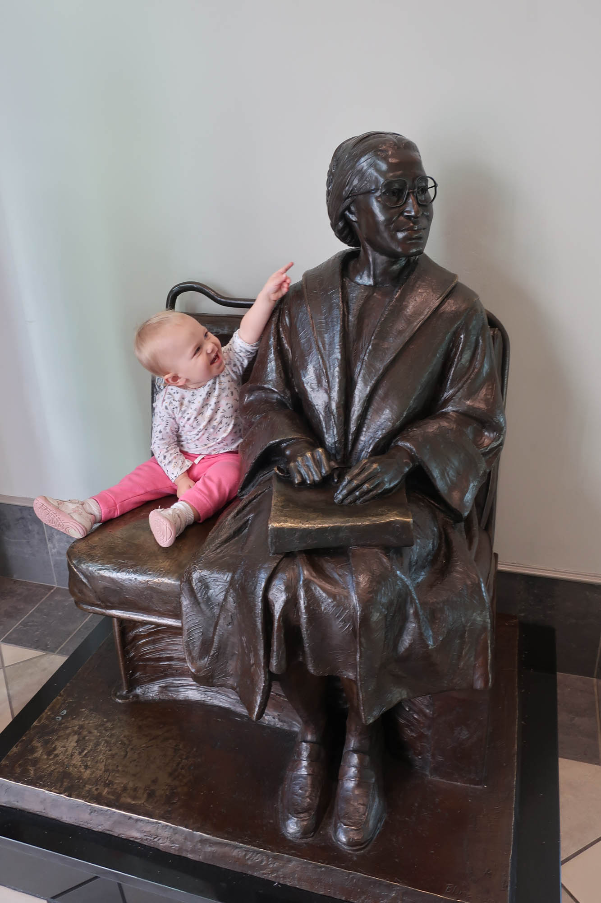

On December 27th-28th, we went to Alabama. It was about 2 and a half hours to get to Montgomery, and I slept for the last hour, so according to me, nothing interesting happened.
Rosa Parks Museum
I woke up about 3 minutes before we arrived at the Rosa Parks Museum The Rosa Parks Museum was very interesting, but the first half was quite distracting and made it difficult to comprehend anything. We were stuck in rooms for many minutes before the lights would darken and screens would turn on, and then, when it came to the bus reenactment, we could not go into the room until we watched something in the room before, and the doors would not close for at least 5 minutes and would just keep bouncing open and almost shut (they were automatic). It was easier to understand things after that little hiccup though. There were no pictures allowed in the exhibits, but they were allowed in the lobby. Phoebe loved the statue of Rosa Parks in the lobby.

Photo: Phoebe and the Statue of Rosa Parks
There was also a “Time Machine” in the childrens section (which was disappointing, just a bunch of signs for you to read, just like the rest of the museum). The time machine could have been better, there was a guide (on the screens), and the very loud bus would start before she was done talking, and there were other things as well.
The Capitol
After the Rosa Parks Museum, we decided to walk to the Capitol. It was not as far as the Selma - Montgomery march (54 miles!) but it was still cool how there were a lot of memorials for the march, like this cool crosswalk:
When we got to the Capitol, Rachel asked, “Can we just walk in? There isn’t a gate or anything!” So, we just walked in!
Our tour guide was a retired news anchor Tim Lennox. We were able to go into almost every important room, like the chamber for the House of Representatives:
The walls were not 3 dimensional, even though they look like it. It’s a painting technique called trompe-l’œil. This was also the room where the states first seceded from the Union, and where a telegraph was sent to the Confederate troops in South Carolina to attack Fort Sumter.
The stairs were very cool, but the railing was only knee-height, so we all stayed close to the walls:
Photo: Capitol Stairs
Photo: Capitol Stairs 2
Moon Tree
After the Capitol we meandered our way to a Loblolly pine tree that had been to space. There was a little plaque and everything. You can learn more about it here
Photo: Loblolly Moon Tree
CSA Whitehouse
After the Moon Tree, we made our way down to the Avenue of Flags, at the foot of each was the state rock (Wyoming had to be different)
We got some free lead bullets there, we didn’t take pictures of them, but hopefully we don’t die of lead poisoning!(It’s February, we seem to be OK.)
Alabama Department of Archives & History
After that, we walked to the Alabama Department of Archives & History, where (because we got the free bullets) Benjamin thought there would be “free stuff” there. We all said “there probably won’t be free stuff”, but…
Photo: Benjamin, by a table that has a sign that says Free Stuff!!!
The table was full of leftovers from their 200th anniversary of statehood from 2019.
There were a lot of exhibits, but the museum closed at 4:30, so we didn’t have much time in the museum.
The Hotel
After the museum, we walked back to our cars, passing by the Dexter Avenue King Memorial Baptist Church:
Photo: Dexter Avenue King Memorial Baptist Church
Then we headed to our hotel.
When we got there, we ordered McDonald’s, ate a whole bunch of seasonal Hershey’s Kisses, like Hot Chocolate and Sugar Cookie, both of which were very good. We also watched Catching Fire and the first Mockingjay movie, and prepared for our trip to Selma the next day.
Photo: Zoë discovers that the wall of mirrors is actually a closet
Source Code
---title: "Trip to Alabama Day 1"subtitle: "Montgomery"date: "February 22, 2023"categories: [travel]image: "images/thumbnail.jpg"format: html: code-fold: show code-tools: true---## Day 1### The DriveOn December 27th-28th, we went to Alabama. It was about 2 and a half hours to get to Montgomery, and I slept for the last hour, so according to me, nothing interesting happened.### Rosa Parks MuseumI woke up about 3 minutes before we arrived at the Rosa Parks MuseumThe Rosa Parks Museum was very interesting, but the first half was quite distracting and made it difficult to comprehend anything. We were stuck in rooms for many minutes before the lights would darken and screens would turn on, and then, when it came to the bus reenactment, we could not go into the room until we watched something in the room before, and the doors would not close for at least 5 minutes and would just keep bouncing open and almost shut (they were automatic). It was easier to understand things after that little hiccup though. There were no pictures allowed in the exhibits, but they were allowed in the lobby. Phoebe *loved* the statue of Rosa Parks in the lobby.```{r phoebe-and-rosa, echo = FALSE, out.width = "100%"}#| fig-cap: "**Photo:** Phoebe and the Statue of Rosa Parks"knitr::include_graphics("images/phoebe-and-rosa.jpg")```There was also a "Time Machine" in the childrens section (which was disappointing, just a bunch of signs for you to read, just like the rest of the museum). The time machine could have been better, there was a guide (on the screens), and the *very loud* bus would start before she was done talking, and there were other things as well.### The CapitolAfter the Rosa Parks Museum, we decided to walk to the Capitol. It was not as far as the Selma - Montgomery march (54 miles!) but it was still cool how there were a lot of memorials for the march, like this cool crosswalk:```{r crossalk, echo = FALSE, out.width = "100%"}#| fig-cap: "**Photo:** [Commemerative Crosswalk in Mongomery Alabama](https://www.flickr.com/photos/string_bass_dave/29016999726), by [David Brossard](https://www.flickr.com/photos/string_bass_dave/)"knitr::include_graphics("images/crosswalk.jpg")```When we got to the Capitol, Rachel asked, "Can we just walk in? There isn't a gate or anything!" So, we just walked in!Our tour guide was a retired news anchor [Tim Lennox](https://www.linkedin.com/in/tim-lennox-ba48728?challengeId=AQEaVZ5Dxom2PQAAAYVzNsM3XCkrR1kh68cnTGnaz6eIX1v1MSRLUhZyREPqIQTNBk2x8EmNnWw2NaWvsZ2DzqKNPpbnGyHU5g&submissionId=6af9d647-4689-3617-2398-58be8ff92c2c&challengeSource=AgFVynu7987hsAAAAYVzNu1bg10V59swuaSzqRGt6svBQwEuc12u1S9wzImmhi4&challegeType=AgFWTDVRBuUjKgAAAYVzNu1eiorKygqkG8uMOSbnOn84mtiCvbfbEzY&memberId=AgGTY38M4XYbzwAAAYVzNu1hfsCNTtPgRu96qnPh4tX5dPs&recognizeDevice=AgE6HHyYqT7gswAAAYVzNu1k1ZGLuwyudNgyK1wXocBK-vdtnoWe). We were able to go into almost every important room, like the chamber for the House of Representatives:```{r house-chamber, echo = FALSE, out.width = "100%"}#| fig-cap: "**Photo:** [Former House Chamber](https://commons.wikimedia.org/wiki/File:Former_House_Chamber,_Alabama_State_Capitol_20160713_1.jpg), by [DXR](https://commons.wikimedia.org/wiki/User:DXR)"knitr::include_graphics("images/Former_House_Chamber.jpg")``````{r house-chamber-balcony, echo = FALSE, out.width = "100%"}#| fig-cap: "**Photo:** House Chamber, Balcony View"knitr::include_graphics("images/house-chamber-ours-kids.jpg")```The walls were not 3 dimensional, even though they look like it. It's a painting technique called *trompe-l'œil*. This was also the room where the states first seceded from the Union, and where a telegraph was sent to the Confederate troops in South Carolina to attack Fort Sumter.We also saw the Senate Chamber:```{r senate-chamber, echo = FALSE, out.width = "100%"}#| fig-cap: "**Photo:** [Former Senate Chamber](https://commons.wikimedia.org/wiki/File:Former_Senate_Chamber,_Alabama_State_Capitol,_Montgomery_20160713_1.jpg), by [DXR](https://commons.wikimedia.org/wiki/User:DXR)"knitr::include_graphics("images/Former_Senate_Chamber.jpg")```The stairs were very cool, but the railing was only knee-height, so we all stayed close to the walls:```{r stairs1, echo = FALSE, out.width = "100%"}#| fig-cap: "**Photo:** Capitol Stairs"knitr::include_graphics("images/capitol-stairs-ours.jpg")``````{r stairs2, echo = FALSE, out.width = "100%"}#| fig-cap: "**Photo:** Capitol Stairs 2"knitr::include_graphics("images/capitol-stairs-ours2.jpg")```### Moon TreeAfter the Capitol we meandered our way to a Loblolly pine tree that had been to space. There was a little plaque and everything. You can learn more about it [here](https://nssdc.gsfc.nasa.gov/planetary/lunar/moon_trees/montgomery_al_tree.html)```{r tree, echo = FALSE, out.width = "100%"}#| fig-cap: "**Photo:** Loblolly Moon Tree"knitr::include_graphics("images/moon-tree.jpg")```### CSA WhitehouseAfter the Moon Tree, we made our way down to the Avenue of Flags, at the foot of each was the state rock (Wyoming *had* to be different)```{r flags, echo = FALSE, out.width = "100%"}#| fig-cap: "**Photo:** [A southeast view of the Alabama State Capitol, Montgomery, also depicting the Avenue of Flags](https://commons.wikimedia.org/wiki/Category:Uploads_by_User:DXR_in_Alabama#/media/File:Alabama_State_Capitol,_Montgomery,_Southeast_view_20160713_1.jpg), by [DXR](https://commons.wikimedia.org/wiki/User:DXR)"knitr::include_graphics("images/avenue-of-flags.jpg")```Then, we went over to the CSA Whitehouse:```{r porch, echo = FALSE, out.width = "100%"}#| fig-cap: "**Photo:** Us on the porch of the CSA Whitehouse"knitr::include_graphics("images/csa_whitehouse-ours.jpg")```We got some free lead bullets there, we didn't take pictures of them, but hopefully we don't die of lead poisoning! (It's February, we seem to be OK.)### Alabama Department of Archives & HistoryAfter that, we walked to the Alabama Department of Archives & History, where (because we got the free bullets) Benjamin thought there would be "free stuff" there. We all said "there probably won't be free stuff", but...```{r free-stuff, echo = FALSE, out.width = "100%"}#| fig-cap: "**Photo:** Benjamin, by a table that has a sign that says Free Stuff!!!"knitr::include_graphics("images/free-stuff.jpg")```The table was full of leftovers from their 200th anniversary of statehood from 2019. There were a lot of exhibits, but the museum closed at 4:30, so we didn't have much time in the museum.### The HotelAfter the museum, we walked back to our cars, passing by the Dexter Avenue King Memorial Baptist Church:```{r church, echo = FALSE, out.width = "100%"}#| fig-cap: "**Photo:** Dexter Avenue King Memorial Baptist Church"knitr::include_graphics("images/dexter-church.jpg")```Then we headed to our hotel.When we got there, we ate dinner, and went to our respective rooms (we had two rooms). We also watched Catching Fire and the first Mockingjay movie, and prepared for our trip to Selma the next day.```{r hotel, echo = FALSE, out.width = "100%"}#| fig-cap: "**Photo:** Zoë discovers that the wall of mirrors is actually a closet"knitr::include_graphics("images/hotel.jpg")```
{kind=link}
{kind=link}
{kind=link}